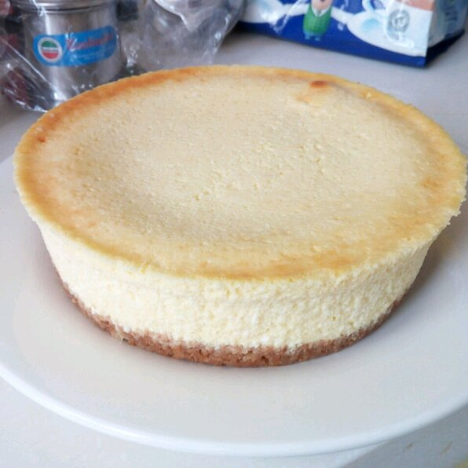

Basic Cheesecake

A basic thick cheesecake. Serve with your favorite fruit topping.
Ingredients
- 1 cup graham cracker crumbs
- ¼ cup finely chopped walnuts
- 3 tablespoons brown sugar
- 1 tablespoon ground cinnamon
- ½ teaspoon ground nutmeg
- 5 tablespoons butter, melted
- 3 (8 ounce) packages cream cheese
- 1 cup white sugar
- 1 cup sour cream
- 1 cup heavy cream
- 3 tablespoons all-purpose flour
- 1 tablespoon vanilla extract
- 3 eggs
Steps
- Preheat oven to 350 degrees F (175 degrees C). In a medium bowl, combine graham cracker crumbs, chopped walnuts, brown sugar, cinnamon, nutmeg and melted butter. Mix well and press into the bottom of a 9 inch springform pan. Bake in preheated oven for 10 minutes. Remove from oven and allow to cool.
- In a large bowl, beat cream cheese and sugar together until smooth. Beat in sour cream and heavy cream. Blend in the flour and vanilla. With mixer on low speed, add eggs one at a time. Pour batter over crust.
- Bake in the preheated oven for 60 to 70 minutes, or until center is almost set (filling will be soft). Refrigerate at least 6 hours or overnight before removing from pan.